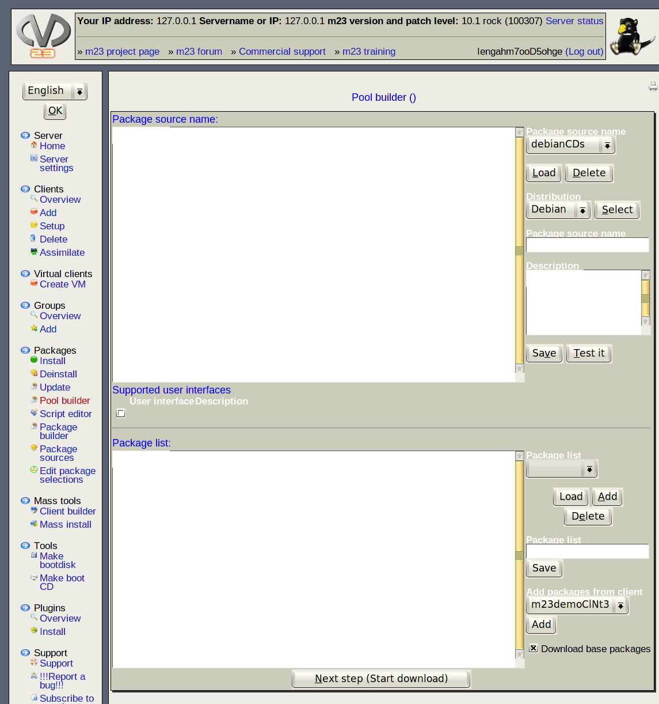

- Select drive: Choose a mount point from which to copy your packages and hit "Read drive".
- Status: Hitting "Check drive state"will show the current status of this drive and the size of the package source hosted on it.
- Read additional media: It is possible to add additional media as well to your pacakge source after the initial copy.
- Create index: Hitting "Next step (Create package index)" after you added all media you wanted will continue the process.
root
2013-05-11